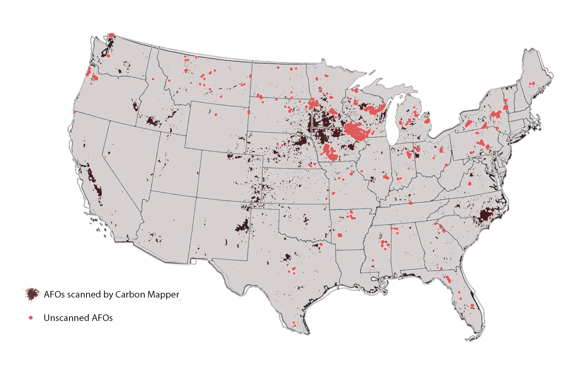

Flying Under the Radar
Gaps in Satellite Detection of Factory Farm Methane Emissions
Overview
Published work: This analysis was conducted for the Institute for Agriculture and Trade Policy (IATP) and published in February 2026. Read the full report: Flying Under the Radar: Gaps in Satellite Detection of Factory Farm Methane Emissions.
This was my first exposure to GIS and spatial analysis. I taught myself QGIS, the Carbon Mapper API, and geospatial Python (geopandas, shapely) over the course of the internship while building the pipeline concurrently.
Methane is approximately 80 times more potent than carbon dioxide over a 20-year period, and the livestock sector is the single largest contributor to global methane emissions. Despite this, factory farms are not required to report methane emissions, and environmental oversight is alarmingly relaxed. Satellite imaging has emerged as a promising tool for detecting methane plumes from these facilities, though coverage is currently incomplete.
This project cross-referenced geographic U.S. Animal Feeding Operation (AFO) data with satellite scene coverage from Carbon Mapper, a nonprofit remote sensing initiative that detects and quantifies methane and CO2 at the facility level. The to identify which operations are currently flying under the radar of satellite detection.
Goal: To identify which operations are currently flying under the radar of satellite methane plume detection.*
The full analysis, maps, and policy recommendations are available in the IATP publication linked above and at the bottom of this page.
Background
What Are AFOs and CAFOs?
The EPA defines an Animal Feeding Operation (AFO) as any facility where animals are confined and fed for at least 45 consecutive days. Concentrated Animal Feeding Operations (CAFOs) are a subset housing at least 1,000 animal units (the equivalent of 1,000 beef cattle or 2,500 large hogs). Above this threshold, facilities are technically subject to Clean Water Act, but in practice the majority operate without permits or federal monitoring. Facilities below the threshold face no federal regulation at all.
The environmental footprint of these operations cannot be overlooked. Fine particulate matter levels are 28% higher in census tracts with cattle operations than those without, and research has found that just 30 U.S. counties contain roughly 25% of all AFOs nationally. Ultimately, this environmental harm is concentrated in rural, low-income, and minority communities.
Why Methane Monitoring Matters
Because methane only persists in the atmosphere for about 12 years — far shorter than CO2 — rapid cuts in livestock methane could meaningfully buy time on overall greenhouse gas targets. That makes accurate measurement a prerequisite for effective policy. But satellite methane detection has historically focused on oil and gas infrastructure, leaving the agricultural sector significantly underrepresented in observational datasets.
Carbon Mapper has begun filling that gap, using aircraft and satellite instruments to detect facility-level methane and CO2 plumes. Their publicly accessible data portal includes thousands of detections across multiple sensor platforms. But their coverage is still expanding, and where they haven’t looked, emissions go uncounted.
Data
Carbon Mapper scene coverage — Satellite and airborne scene footprints retrieved via the Carbon Mapper API, representing the spatial extent of observations during the study period. API responses required normalization before spatial processing, as bounding boxes were inconsistently available and geometry structures varied across endpoints.
U.S. AFO location data — Facility-level records for cattle and hog operations across the United States, including geographic coordinates, operation type, and size classification. The dataset identified 8,763 cattle operations and 6,963 hog operations for a total of 15,726 facilities.
Natural Earth boundary layers — State and country boundary shapefiles used as basemap reference layers.
Methods
The core analytical task was a spatial join between AFO point locations and Carbon Mapper scene coverage polygons. All layers were standardized to WGS84 (EPSG:4326). AFO facilities were classified as:
- Scanned — facility falls within at least one Carbon Mapper scene footprint
- Unscanned — facility falls entirely outside available scene coverage
This classification was performed in Python using geopandas, with QGIS used for visual inspection and map output. The resulting unscanned set was then examined for spatial structure. In other words, I wanted to identify whether coverage gaps were randomly distributed or geographically concentrated.
The Carbon Mapper API pipeline required building a normalization layer to handle inconsistent response schemas before any spatial operations could be run. Scene geometries were sometimes missing explicit bounding boxes and had to be reconstructed from polygon coordinates directly.
Findings
Of the 15,726 U.S. cattle and hog AFOs in the dataset, 1,222 — roughly 1 in 13 — fall entirely outside Carbon Mapper’s current satellite detection coverage. These unscanned facilities are not randomly distributed: they appear concentrated in the Midwest and, to a far less extent, the North East. Both of these regions have some of the highest AFO densities in the country.
This concentration matters. If the gaps were random, the resulting undercount of methane emissions would be harder to attribute. But spatially clustered coverage gaps mean that entire chunks of main agricultural regions are being excluded from observational records. Thus, emissions estimates built on available satellite data will ultimately undercount agricultural methane in precisely the areas where it is most concentrated.
The 1,222 unscanned AFOs identified in this analysis represent a concrete starting point for expanding satellite monitoring priorities.

Predictive Modeling
This analysis was always intended as a foundation, not an endpoint. The project goal was the coverage gap analysis itself. Now, the natural next step would be moving from identifying unobserved facilities to predicting their likely emission profiles. Essentially, we would be asking whether spatial structure and observable CAFO characteristics could support inference about methane risk in unscanned regions.
This would be a significant project well beyond the scope of my 3 month internship. It would require building a modeling dataset linking each facility to features like distance to nearest detected plume, local scene frequency over time, facility size, and regional agricultural density. A classification or risk-scoring model trained on observed facilities could then be applied to the unscanned set to produce a corrected emissions surface. Additionally, any predictive model would need to explicitly account for detection probability as distinct from emission probability, given that atmospheric conditions like wind or cloud coverage are major limitations.
Tools & Stack
- Python — requests, geopandas, shapely, pandas, matplotlib
- QGIS 3.x — spatial layer management, overlay inspection, map export
- Carbon Mapper API — scene catalog, coverage polygons, plume detection metadata
- Data — U.S. AFO location records, Natural Earth boundary shapefiles
Read the Full Report
Published by the Institute for Agriculture and Trade Policy (IATP), February 2026 | Analysis conducted in Python and QGIS | Data: Carbon Mapper API, U.S. AFO records